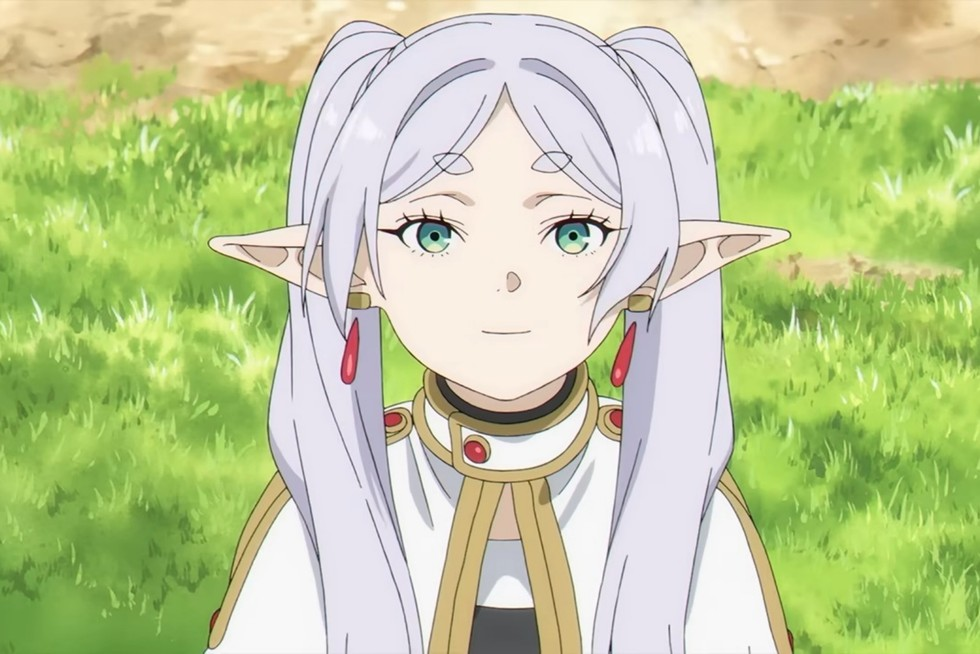
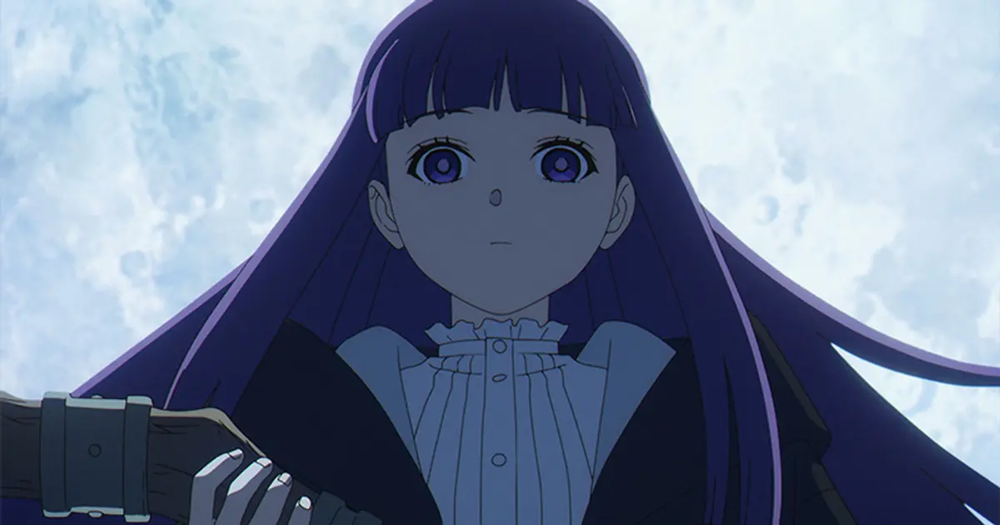
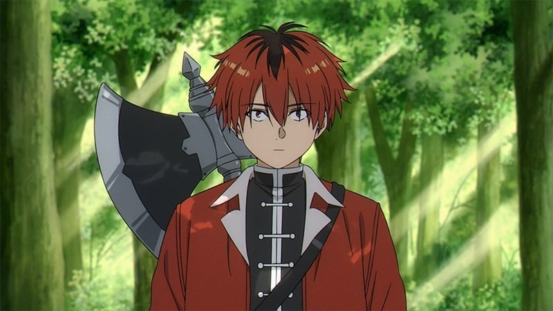
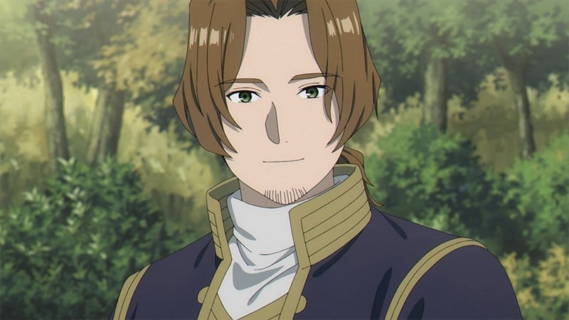

The mage Frieren defeated the Demon King alongside the hero Himmel's party after a 10-year quest.
Peace was restored to the kingdom. Because she is an elf, she is able to live over a thousand years.
She promises Himmel and the others that she will be back to see them and then sets out on a journey by herself.
Fifty years later, Frieren goes to visit Himmel and the others. She remained unchanged, but Himmel and the others have aged and only a little of their lives remain.
Later, she witnesses Himmel's death. Frieren is pained by her desire to have spent more time getting to know people.
With that regret in her heart, she then goes on a journey to do just that. On her journey, she meets many people and many events await her.
Source: https://www.rottentomatoes.com/tv/frieren_beyond_journeys_end
I like this show because the story has a sort of relaxed mood while also being filled with action. I also really like the worldbuilding and the focus of on random sometimes mundane events. All the side characters are also always interesting.